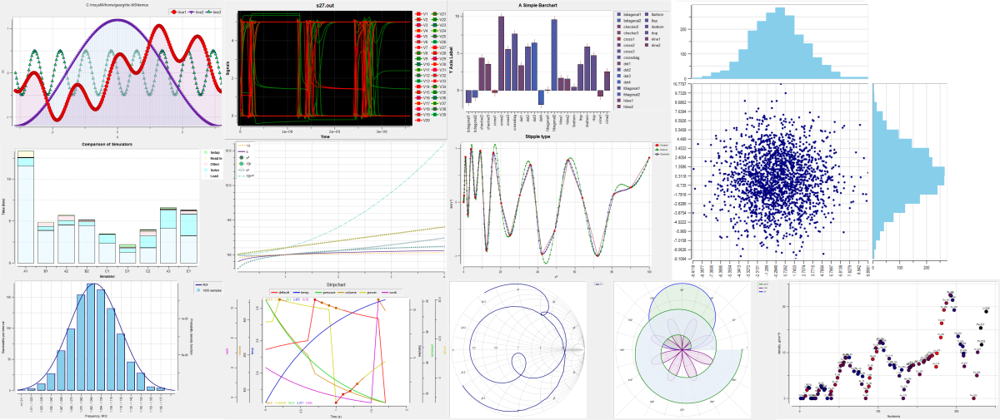

Rbc — Refactored BLT Components for Tcl/Tk 9¶

Rbc extends Tcl/Tk 9 with scientific plots, interactive graph controls, real and complex vectors, spline interpolation, and window and image utilities. Graphs update automatically when their attached vectors change. All types of plots and graphical elements support SVG and PostScript export.
This repository maintains and extends Rbc for Tcl/Tk 9.0. The current package version is 0.5.0.
Components¶
graph — Cartesian plots with line elements, symbols, multiple axes, error bars, markers, legends, and PostScript output.
barchart — Bar plots with normal, aligned, stacked, and overlapping presentations.
stripchart — Plots using independent line segments, suitable for waveform and continuously updated data displays.
polar — Complex-plane plots with polar or Smith-chart grids. Data coordinates remain Cartesian; elements can use real X/Y vectors or complex vectors directly.
graphtoolbar — A TclOO megawidget providing graph interaction, including zooming, panning, crosshairs, closest-point information, legend interaction, and context controls.
vector — Real and complex double-precision vectors, with numerical operations and automatic notification of attached graph elements.
spline — Natural cubic and shape-preserving quadratic interpolation, including parametric interpolation of complex vectors.
winop — Window operations and image-processing utilities.
Eligible dense line and strip elements support -decimate auto. The reduction preserves waveform extrema and reuses
cached summaries across axis changes, ranged value updates, and monotonic tail appends.
An optional Cairo backend adds antialiased plotting. Cairo-enabled builds select it by default; applications can choose
-renderer native for workloads where native drawing is faster. Text continues to use Tk in either mode.
Rbc contains selected components derived from BLT. It is not a complete replacement for the BLT toolkit.
Requirements¶
Running Rbc¶
Tcl and Tk 9.0.
The Tcl argparse package.
A graphical environment supported by the Tk installation.
The build environments described here are Linux with X11 Tk and Windows with MSYS2/UCRT64 or MSVC. Tcl/Tk 8.x compatibility is not a target of this fork.
The full package require rbc loads Tk and graphtoolbar.tcl, including its argparse dependency.
For vector-only use in tclsh, load the Tcl-only package instead:
package require rbc::vector 0.5.0
::rbc::vector create samples
samples set {1 2 3}
This uses the same binary without initializing Tk, requiring a display, or loading argparse. Loading
package require rbc afterward adds the GUI while preserving existing vectors. The binary’s linked dependencies
must still be installed; building still requires the usual Tcl/Tk development files.
Direct load now initializes only the vector core; use package require rbc for the full package.
External C extensions can use Rbc_VectorInitStubs from the updated stub library for this Tcl-only path.
The full tests and documentation generation need a working graphical display. The vector-only test target does not.
Building Rbc¶
A C compiler and linker compatible with the selected Tcl/Tk build.
GNU Make and a Unix-style shell.
Tcl/Tk development files, including
tclConfig.shandtkConfig.sh.Matching Tk private headers.
On Linux, the X11 development headers and libraries.
For
--enable-cairo, Cairo 1.12 or newer with its platform backend and development headers. Configure usespkg-configunless bothCAIRO_CFLAGSandCAIRO_LIBSare supplied.
Rbc still uses a small number of private Tk interfaces. Retain the matching Tk source tree unless the development
installation provides all required private headers. The configure script uses the source location recorded in
tkConfig.sh when locating these headers.
Keep the corresponding Tcl source tree available as well when using the provided development targets: the Makefile sets
TCL_LIBRARY from the source location recorded in tclConfig.sh.
The repository includes a generated configure script. Autoconf is needed only when regenerating it after changes to
the build configuration.
Building from source¶
Obtain the sources:
git clone https://github.com/georgtree/rbc-tk9.git
cd rbc-tk9
The examples below build in the repository root. Replace the Tcl/Tk paths with paths for your installation or build trees.
--with-tcl and --with-tk take the directories containing tclConfig.sh and tkConfig.sh, not the configuration
filenames themselves.
Install argparse for the same Tcl interpreter before running Rbc, its tests, or its demos.
Linux¶
For example, using Tcl/Tk build trees and a user-local installation prefix:
./configure \
--with-tcl=/path/to/tcl9.0/unix \
--with-tk=/path/to/tk9.0/unix \
--prefix="$HOME/.local" \
--enable-cairo
make -j4
make test
make install
The Tcl/Tk directories can instead refer to installed configuration files, provided that the required headers and source locations remain accessible.
The selected Tcl/Tk shared libraries must also be discoverable by the system dynamic loader. The Makefile supplies the
build-directory environment for its test and shell targets.
Windows with MSVC¶
The Nmake build in win supports Tcl/Tk 9 and optional Cairo. It requires MSVC-built
Tcl/Tk source trees and matching libraries; use MSVC Cairo libraries rather than
MSYS2 import archives. See the MSVC build instructions for dependency
setup, CAIRO=1, testing, and installation. Autoconf flags below apply to the
Unix/MSYS2 build, not to Nmake.
Windows with MSYS2/UCRT64¶
Run the following commands in an MSYS2 UCRT64 shell, using Tcl and Tk built with a compatible toolchain and architecture:
./configure \
--with-tcl=/path/to/tcl9.0/win \
--with-tk=/path/to/tk9.0/win \
--prefix=/ucrt64 \
--enable-cairo
make -j4
make test
make install
Ensure that the selected Tcl/Tk DLLs, Cairo DLLs and their dependencies, and compiler runtime DLLs are available through
PATH. Use Cairo and pkg-config from the same UCRT64 toolchain as Tcl/Tk and Rbc.
The UCRT64 shell does not automatically determine Rbc’s installation prefix. Specify --prefix=/ucrt64 when that is
the intended destination.
Configure options and renderer defaults¶
Option |
Effect |
|---|---|
|
Builds Cairo support and makes |
|
Builds without Cairo; |
|
Enables Cairo and links its non-system dependencies from static archives into the RBC shared library. Requires GCC and GNU-compatible linker options. |
|
Disables forced static linking of Cairo dependencies. This is the default; Cairo support is controlled separately by |
|
Embeds the MinGW-w64 winpthreads runtime in the DLL. Independent of Cairo; disabled by default. Requires genuine |
|
Builds with debugging symbols for crash diagnosis. |
|
Select directories containing the matching Tcl/Tk configuration files. |
|
Selects the installation prefix. |
The examples above enable Cairo. Omit --enable-cairo, or replace it with --disable-cairo, for a native-only build.
If Cairo is requested but its headers or platform backend cannot be linked, configure fails rather than silently
building without it.
For a nonstandard Cairo installation, set PKG_CONFIG_PATH to its pkg-config directory, or supply both
CAIRO_CFLAGS and CAIRO_LIBS to configure. Inspect config.log if the backend link check fails.
After changing build features in an existing build directory, run make clean and rebuild.
Choose a renderer for one graph, or set an application-wide default before creating widgets:
::rbc::graph .g -renderer native
.g configure -renderer cairo -antialias default
foreach class {Graph Barchart Stripchart Polar} {
option add *${class}.renderer native
}
Explicit widget options take precedence over the option database. -renderer cairo is unavailable in native-only
builds. Cairo is not uniformly faster: dense traces, symbols and error bars may favour native rendering; image-heavy
workloads may favour Cairo. Use the benchmark suite to compare the workloads relevant to your application.
Linking Cairo statically¶
The Autoconf build supports linking Cairo and its non-system dependencies into the RBC DLL on MSYS2/UCRT64 or shared library on Linux:
./configure \
--with-tcl=/path/to/tcl/config-directory \
--with-tk=/path/to/tk/config-directory \
--enable-cairo-static
make
make test
--enable-cairo-static also enables Cairo support and makes it the default renderer. It cannot be combined with
--disable-cairo. RBC itself remains a shared library; do not use --disable-shared for this purpose.
Configure obtains the dependency list using pkg-config --static and selects exact static archive names for non-system
libraries. Operating-system libraries remain dynamically linked. The link check verifies that the selected archives can
be incorporated into a shared library.
This option does not download or build dependencies. Missing archives or unresolved dependencies cause configuration to
fail; inspect config.log for the linker diagnostics.
MSYS2/UCRT64¶
To also eliminate the RBC DLL’s libwinpthread-1.dll import, add the separate option:
./configure --enable-cairo-static --enable-winpthreads-static
make clean
make
objdump -p tcl9rbc050.dll | rg 'DLL Name:'
Retain your usual --with-tcl, --with-tk, and other configure arguments. Winpthreads is not supplied by
Windows. This option forces inclusion of the genuine libwinpthread.a archive before other libraries,
including compiler-added thread references, and defines WINPTHREAD_STATIC for RBC compilation.
Configure links a test DLL and checks its imports using the target objdump; no test binary is executed.
A missing archive, failed link, remaining winpthreads import, or failed inspection stops configuration.
For cross-compilation, set OBJDUMP to the target tool (for example x86_64-w64-mingw32-objdump).
Custom archive locations can be supplied with LDFLAGS=-L/path/to/lib.
--enable-winpthreads-static works independently of Cairo and is rejected on non-MinGW builds.
--disable-winpthreads-static retains the normal runtime linkage. It does not eliminate imports from
other DLLs: if Cairo itself is shared, Cairo may still require its own winpthreads DLL. Always inspect the
final RBC DLL and its remaining non-system dependencies. Windows system and UCRT imports remain normal.
This configure option does not apply to the MSVC win/makefile.vc build.
Use Cairo, its dependencies and GCC from the same UCRT64 environment as the RBC build. Static libraries must be genuine
.a archives; .dll.a import libraries still require external DLLs.
The build defines CAIRO_WIN32_STATIC_BUILD, links the C++ standard library and Iconv statically, and selects static
GCC runtime support. These are needed by the MSYS2 Cairo dependency chain, including its DirectWrite and font libraries.
The static-Cairo build has been compiled and tested on MSYS2/UCRT64. The resulting RBC DLL is larger because it contains code previously supplied by dependency DLLs.
Inspect the DLL’s direct imports after building:
objdump -p tcl9rbc050.dll | rg 'DLL Name:'
Cairo and the dependencies selected as static archives should no longer appear as DLL imports. Windows system libraries and any remaining dynamically linked runtime libraries are still required. A larger file alone does not establish that every dependency was linked statically.
Static Cairo on Linux¶
Cairo and the non-system dependency archives must support incorporation into a shared library, normally by being built
with -fPIC. Distribution-provided static archives are not necessarily suitable. The configure check attempts a
shared-library link to detect incompatible archives.
The static-Cairo build retains dynamic linking for standard system libraries, including X11/XCB and the C runtime. Tcl/Tk remains a runtime requirement.
For a separately built Cairo dependency installation, select its pkg-config metadata:
PKG_CONFIG_PATH=/path/to/static-prefix/lib/pkgconfig \
./configure \
--with-tcl=/path/to/tcl/config-directory \
--with-tk=/path/to/tk/config-directory \
--enable-cairo-static
Inspect the resulting shared library’s direct dependencies:
readelf -d ./librbc*.so | rg NEEDED
Rebuilding and deployment¶
Use a separate build directory, or run make clean after reconfiguring, when switching between shared and static Cairo
dependencies. The Windows compilation flags differ between these modes.
Updating a statically included dependency requires rebuilding RBC. Static linking changes packaging, not renderer
behavior: applications can still select -renderer native or -renderer cairo. Required Tcl scripts and packages must
still be installed.
Installation locations¶
With the default directory layout, installation places:
The package library,
pkgIndex.tcl, runtime scripts, and supporting resources inPREFIX/lib/rbc0.5.0.Demos in
PREFIX/lib/rbc0.5.0/demos.Manual pages in
PREFIX/share/man/mann.
HTML documentation, image resources and the license are installed in PREFIX/share/rbc0.5.0/doc.
Override DOC_INSTALL_DIR to choose a different location.
If --prefix is omitted, the build system normally inherits the prefix from the selected Tcl configuration.
For other configure options, run:
./configure --help
Uninstalling¶
From the configured build directory, run:
make uninstall
Use the same directory overrides and DESTDIR as for installation. For example:
make uninstall DESTDIR=/path/to/staging
Uninstall removes the RBC package directory (including its stub archive, scripts and demos), installed executables,
public headers (rbc.h, rbcVector.h, rbcDecls.h), rbcStubLib.c, manual pages and HTML documentation resources.
It preserves shared include, bin and manual-page directories and unrelated files in them. Documentation files
are removed individually; empty documentation directories are then removed. A custom DOC_INSTALL_DIR may
therefore contain unrelated files without those files being deleted. Use the same source version and configured
build used for installation so the file lists match; uninstall does not track files installed by other versions.
Creating an installation archive¶
After configuring the desired build, run:
make dist
# Optional ZIP archive, convenient for Windows Explorer:
make dist-zip
These GNU make targets build RBC and stage the same files as ``make install``, including the library,
pkgIndex.tcl, runtime resources, demos, public headers, stub library, manual pages and HTML documentation
with its images. They do not create a source archive or write into the configured installation prefix.
They use the generated documentation already present in docs/; run make doc first if it needs updating.
Output defaults to dist/rbc0.5.0.tar.gz (and dist/rbc0.5.0.zip for dist-zip) in the build directory.
The archive directly contains lib/, include/, share/, and any installed bin/ files. Extract it into
the intended installation prefix, or merge these directories into that prefix. For example, for an MSYS2
UCRT64 installation, merge them into C:/msys64/ucrt64, not into its lib subdirectory.
Configured subdirectory choices such as lib64 are preserved. All installation directories must be under
--prefix; an external directory produces an error because it cannot be represented in a single relocatable
archive. DESTDIR is not included in archive paths. The archive contains the current build’s binaries and
requires matching platform, architecture, Tcl/Tk and any dynamically linked dependencies; it does not bundle them.
For separately named release builds:
make dist-zip DIST_NAME=rbc0.5.0-windows-x86_64 DIST_ROOT=/path/to/releases
make dist-clean removes that distribution’s staging directory and archives. Source releases can be obtained
from the repository’s GitHub source archives.
Packaging regression tests (no Tk or compiler needed):
tclsh tests/build/installDist.test
The tests use GNU make, a POSIX shell, install and tar; ZIP checks also require zip and unzip.
Loading the package¶
Start the Tcl/Tk interpreter associated with your build and run:
package require rbc 0.5.0
To check the versions in use:
puts "Tcl: [info patchlevel]"
puts "Tk: [package provide Tk]"
puts "Rbc: [package provide rbc]"
If Rbc is installed outside Tcl’s normal package search locations, add its library directory before loading it:
lappend auto_path /path/to/prefix/lib
package require rbc 0.5.0
The same applies to argparse if it is installed in a separate location.
When installing a prebuilt package, preserve the complete package directory, including pkgIndex.tcl, the shared
library, graphtoolbar.tcl, PostScript prologs, and bitmap resources. Copying only the DLL or shared library is not
sufficient.
Using an uninstalled build¶
From the Rbc build directory:
make shell
This starts the configured Tcl interpreter with the build directory in its package search path. Then load Rbc normally:
package require rbc
Running tests¶
Run the automated test suite from the build directory:
make test
This target builds the package and the public C API test extension, then runs tests/all.tcl with the appropriate build
environment. The automated runner sets native as the option-database default to preserve the existing pixel tests.
Dedicated renderer tests explicitly select Cairo and verify the compiled default. Manual tests and demos retain the
build default: Cairo when enabled, native otherwise.
Run the Tcl-only package-loading and public vector C API tests without a display:
make test-vector
This runs tests/vectorAll.tcl. GUI upgrade/load-order tests run in the normal make test suite and are skipped
by the headless runner. Regenerate your Makefile with ./config.status after updating Makefile.in.
The suite uses tcltest. Pass test selection options through TESTFLAGS.
For example, run the line-decimation test file:
make test TESTFLAGS="-file RBC.graph.element.decimate.A.test"
Or select tests by name:
make test TESTFLAGS="-match RBC.graph.element.decimate.*"
On a headless Linux system, an X11 virtual display can be used if Xvfb is installed:
xvfb-run -a make test
Review the test summary and any skipped-test constraints. The manualtests directory contains additional visual and
interactive checks that are separate from the automated suite.
Running demos¶
From an in-tree build, start the demo browser with:
make shell SCRIPT=demos/demos.tcl
The browser launches individual demos when their thumbnails are selected.
An individual demo can also be started directly:
make shell SCRIPT=demos/graph1.tcl
After installation, use the matching Tcl/Tk 9 interpreter:
wish9.0 /path/to/prefix/lib/rbc0.5.0/demos/demos.tcl
The executable may instead be named wish, depending on the Tcl/Tk installation. On Windows, use the corresponding
wish.exe.
The demos locate their supporting files relative to their own script directory. Keep the demo scripts, images, bitmaps, stipples, and helper scripts together.
The current demos cover graphs, bar charts, stripcharts, symbols, spline interpolation, and window/image operations.
Rendering benchmarks¶
Performance benchmarks are separate from the correctness tests. They can create large data sets and should be run deliberately.
In addition to Rbc and argparse, the benchmark scripts require the Tcllib packages csv, report, and
struct::matrix.
Run the small smoke profile from an in-tree build:
make shell SCRIPT="tests/benchmark/run.tcl -profile smoke"
Run the standard benchmark suite:
make shell SCRIPT="tests/benchmark/run.tcl -profile standard"
Run a focused line/strip comparison and save CSV results:
make shell SCRIPT="tests/benchmark/run.tcl -profile standard -benchmarks line,strip -renderer cairo -antialias default -csv-dir benchmark-results"
Benchmarks explicitly default to -renderer native -antialias default, independently of the build default. Select
-renderer cairo for the Cairo comparison and keep results from different builds and power conditions separate.
The suite includes line, strip, symbol, error-bar, bar, marker, and mixed workloads. For individual line-benchmark measurements and options, see the benchmark README.
Documentation¶
The generated HTML documentation is available online:
The repository also includes generated HTML under docs/ and manual pages as docs/*.n. Open docs/index.html to
browse the local HTML documentation.
Regenerating documentation¶
Documentation generation requires:
A working Rbc build and its runtime dependencies.
The Tcl
ruffpackage with Sphinx and nroff output support.Tcllib’s
fileutilpackage.Python Sphinx, with
sphinx-buildavailable throughPATH.ditaaand its Java runtime when rendering diagrams that use the configured diagram generator.
The published documentation uses a modified Ruff package that is not currently public. Other Ruff versions may produce different output or lack the required output formats.
From an in-tree build, run:
make doc
The generator reads the .ruff sources and Tcl API documentation, writes Sphinx sources under docs/sphinx, builds
HTML under docs, and generates the .n manual pages.
Review the generator output and resulting pages before publishing. The current generator prints Sphinx diagnostics, so the Make command’s exit status alone is not a complete documentation-build check.
README.md supplies the shared introduction and build instructions.
docs/startPage.ruff reads that file as the documentation preamble.
Reporting problems¶
Please use the issue tracker.
For build or runtime problems, include:
The Rbc version or commit.
Operating system and architecture.
Tcl/Tk versions and, on Windows, the compiler/MSYS2 environment.
Configure options and the relevant error output.
A small Tcl script reproducing the problem, when applicable.
For rendering problems, include a screenshot and the relevant graph, element, pen, or marker options.
History and acknowledgments¶
Rbc originated as a refactoring of selected components from version 2.4z of the BLT toolkit, developed by George Howlett and other contributors.
Samuel Green, Nicholas Hudson, Stanton Sievers, and Jarrod Stormo carried out the original Rbc project at Rose-Hulman Institute of Technology during 2008–2009. The project adapted commonly used BLT components for Tcl/Tk 8.5 and was associated with the GDAT graphical data-analysis project.
Subsequent work included additional maintenance, demo improvements, and C stubs support. The stubs implementation includes work by Ashok P. Nadkarni.
Emiliano Gavilán adapted Rbc for Tcl/Tk 9.0. This repository is based on his Rbc Tcl/Tk 9 repository.
George Yashin maintains this fork and its further Tcl/Tk 9 modernization, new functionality, tests, performance improvements, and documentation.
The project also acknowledges the Tcl/Tk developers, the maintainers of the Tcl Extension Architecture build system, and the contributors whose code and resources remain part of Rbc.
Copyright and licensing¶
Rbc includes material from several authors and projects. The applicable copyright notices, permission conditions, and warranty disclaimers are retained in the source distribution.
The main license.terms contains:
Copyright (c) 2009, Samuel Green, Nicholas Hudson, Stanton Sievers, and Jarrod Stormo. All rights reserved.
Copyright 1998 Lucent Technologies, Inc.
The associated redistribution conditions and warranty disclaimers.
Additional notices include:
Copyright (c) 2018 Ashok P. Nadkarni in generic/rbcStubLib.c.
Copyright 1989–1992 Regents of the University of California and copyright 1991–1997 Bell Labs Innovations for Lucent Technologies in library/rbcGraph.pro.
Copyright 1991–1997 Bell Labs Innovations for Lucent Technologies in library/rbcCanvEps.pro.
Notices for the Regents of the University of California, Sun Microsystems, Scriptics, ActiveState, and other contributors in the bundled Tcl configuration support license.
Ajuba Solutions and ActiveState notices in tclconfig/tcl.m4, and Scriptics and ActiveState notices in Makefile.in.
Copyright (C) 1994 X Consortium in the bundled installation helper.
George Yashin’s copyright attribution in the generated documentation.
This overview does not replace the full license texts or individual file notices. Preserve the applicable notices, conditions, and disclaimers when redistributing source or binary packages.
External dependencies, including Tcl/Tk, Cairo, argparse and Tcllib, retain their own licenses.
Copyright (c) George Yashin